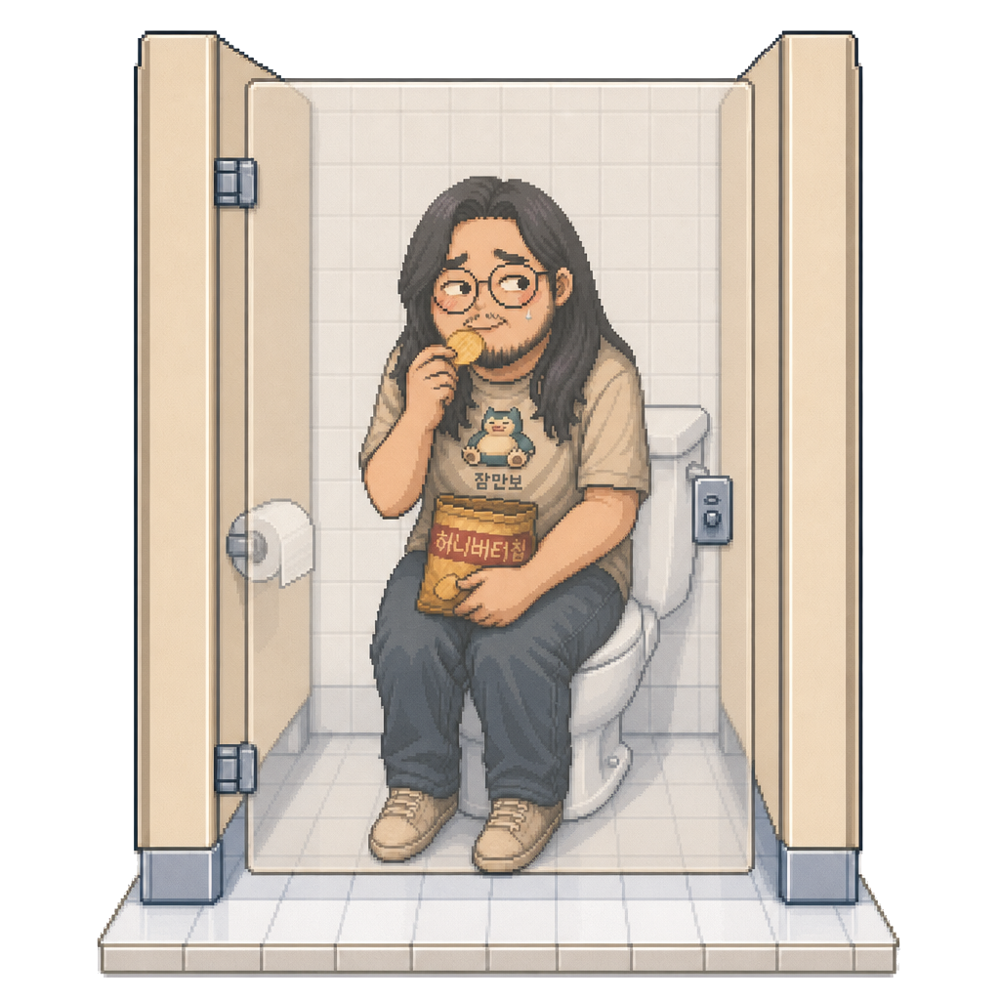
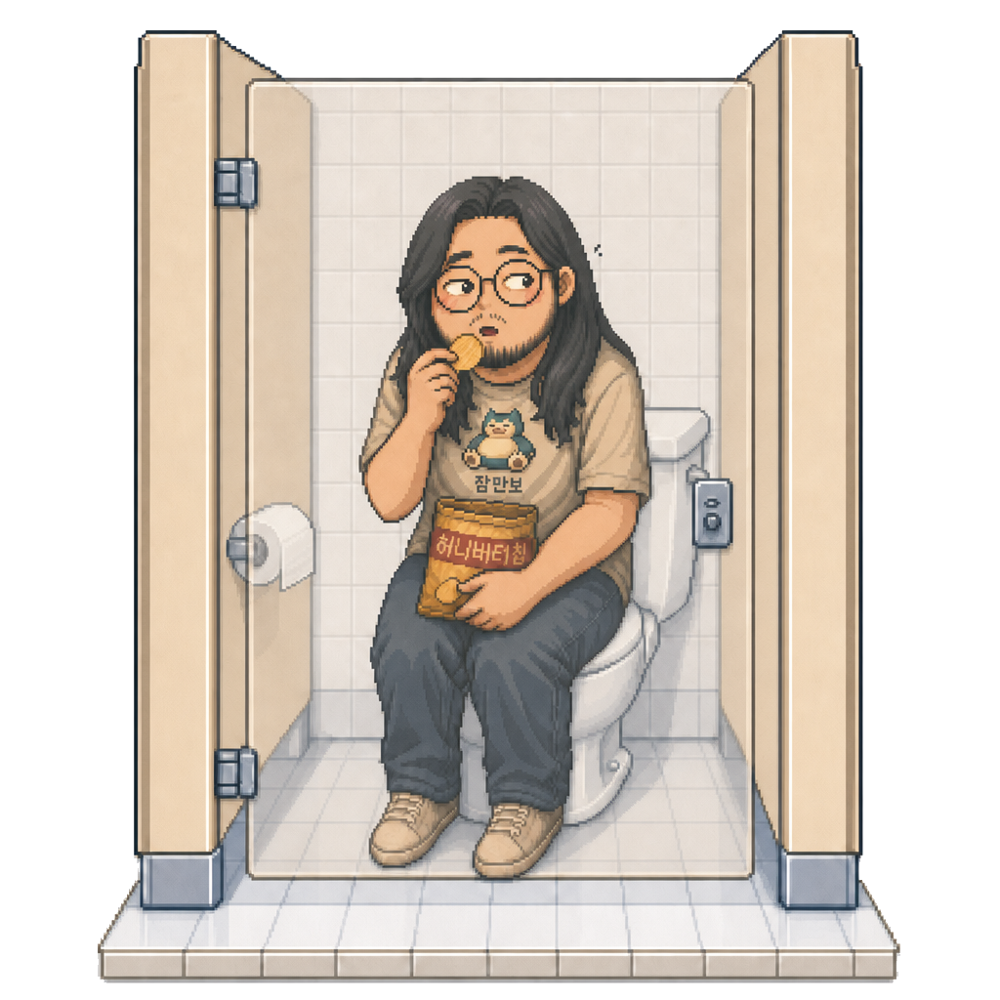
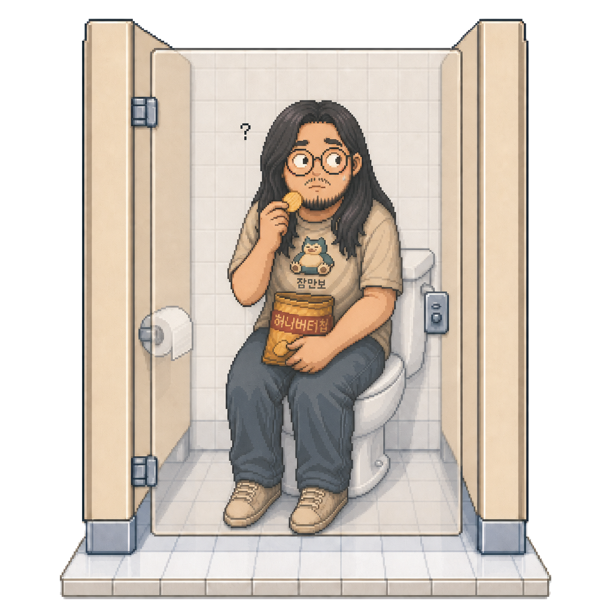
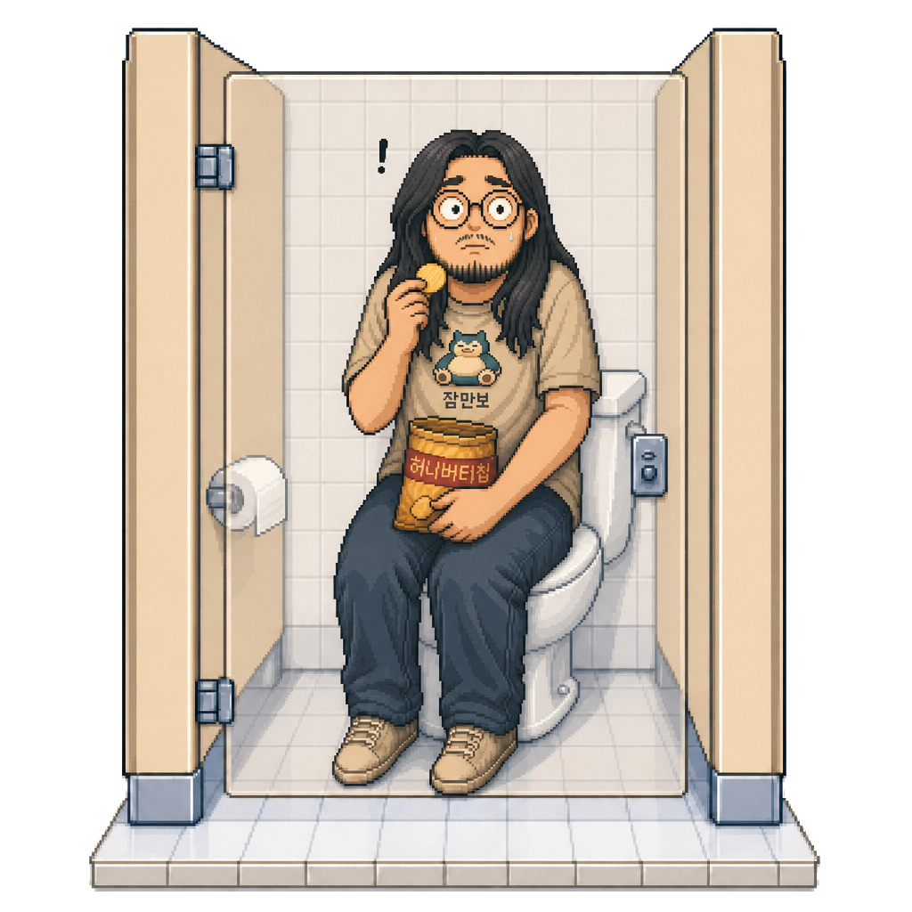
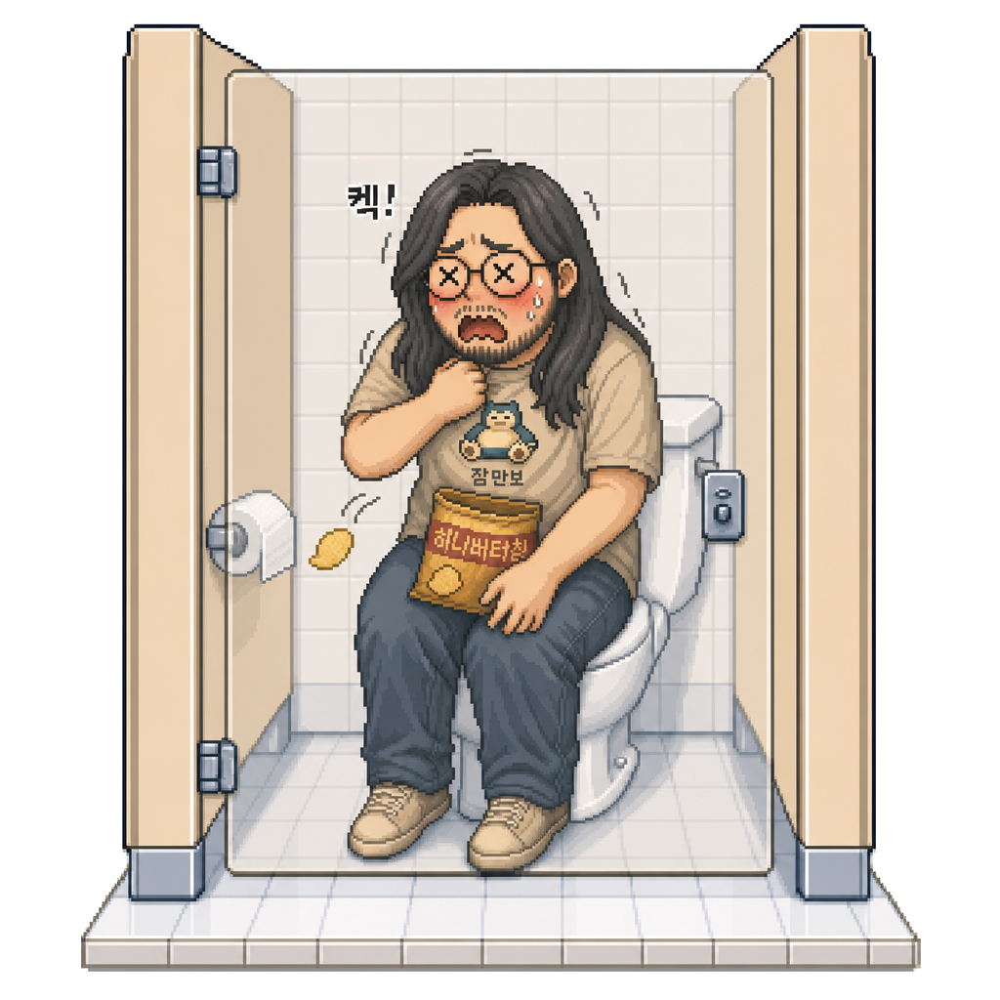
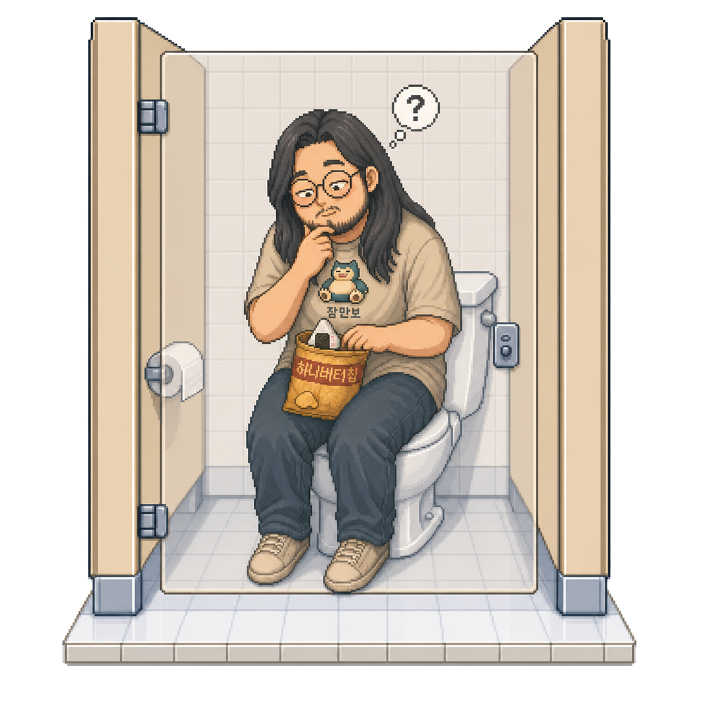

<!DOCTYPE html>
<html lang="ko">
<head>
<meta charset="UTF-8">
<meta name="viewport" content="width=device-width, initial-scale=1">
<title>🍙 동건이</title>
<style>
  * { box-sizing: border-box; }

  html, body {
    margin: 0;
    padding: 0;
    background: transparent;
    overflow: hidden;
    height: 100vh;
    font-family: -apple-system, BlinkMacSystemFont, 'Apple SD Gothic Neo', 'Pretendard', 'Segoe UI', sans-serif;
  }

  .donggun-container {
    position: fixed;
    bottom: 12px;
    left: 50%;
    transform: translateX(-50%);
    width: 320px;
    pointer-events: none;
  }

  .controls {
    position: absolute;
    top: -8px;
    right: 4px;
    pointer-events: auto;
    opacity: 0.55;
    transition: opacity 0.2s;
    z-index: 5;
  }
  .controls:hover { opacity: 1; }

  .mic-btn {
    background: rgba(255,255,255,0.95);
    border: 1.5px solid #888;
    color: #555;
    width: 36px;
    height: 36px;
    border-radius: 50%;
    font-size: 15px;
    cursor: pointer;
    display: flex;
    align-items: center;
    justify-content: center;
    padding: 0;
    box-shadow: 0 2px 8px rgba(0,0,0,0.18);
  }
  .mic-btn.active {
    background: #e07b6e;
    border-color: #c95a4d;
    color: white;
  }

  .level-meter {
    display: none;
    margin-top: 4px;
    margin-left: 2px;
    width: 32px;
    height: 4px;
    background: rgba(255,255,255,0.8);
    border-radius: 2px;
    overflow: hidden;
  }
  .mic-btn.active + .level-meter { display: block; }
  .level-bar {
    height: 100%;
    background: linear-gradient(90deg, #6bcb77, #ffd93d, #e07b6e);
    width: 0%;
    transition: width 0.08s;
  }

  .speech-bubble {
    position: absolute;
    bottom: 305px;
    left: 50%;
    transform: translateX(-50%) translateY(8px);
    background: white;
    padding: 9px 16px;
    border-radius: 18px;
    font-size: 14px;
    font-weight: 700;
    color: #333;
    white-space: nowrap;
    box-shadow: 0 6px 20px rgba(0,0,0,0.28);
    opacity: 0;
    transition: opacity 0.25s, transform 0.25s;
    pointer-events: none;
    z-index: 4;
  }
  .speech-bubble::after {
    content: '';
    position: absolute;
    bottom: -8px;
    left: 50%;
    transform: translateX(-50%);
    width: 0;
    height: 0;
    border-left: 9px solid transparent;
    border-right: 9px solid transparent;
    border-top: 9px solid white;
    filter: drop-shadow(0 2px 1px rgba(0,0,0,0.06));
  }
  .speech-bubble.show {
    opacity: 1;
    transform: translateX(-50%) translateY(0);
  }

  .donggun {
    position: relative;
    width: 300px;
    height: 300px;
    margin: 0 auto;
  }
  .donggun .state-img {
    position: absolute;
    inset: 0;
    width: 100%;
    height: 100%;
    object-fit: contain;
    opacity: 0;
    transition: opacity 0.28s ease-out;  /* 각 프레임이 또렷이 fade-in (TRANSITION_STEP_MS와 짝) */
    image-rendering: pixelated;
    image-rendering: crisp-edges;
    pointer-events: none;
    user-select: none;
    filter: drop-shadow(0 6px 14px rgba(0,0,0,0.18));
  }
  .donggun.eating    .state-eating     { opacity: 1; }
  .donggun.pausing1  .state-pause-mid1 { opacity: 1; }
  .donggun.pausing2  .state-pause-mid2 { opacity: 1; }
  .donggun.paused    .state-paused     { opacity: 1; }
  .donggun.choking   .state-choking    { opacity: 1; }
  .donggun.changing  .state-changing   { opacity: 1; }

  @keyframes idle-bobble {
    0%, 100% { transform: translateY(0); }
    50%      { transform: translateY(-4px); }
  }
  @keyframes chew {
    0%, 100% { transform: scaleY(1)    translateY(0); }
    50%      { transform: scaleY(0.97) translateY(2px); }
  }
  @keyframes choke-shake {
    0%, 100% { transform: translate(0,0) rotate(0); }
    20%      { transform: translate(-4px, 1px) rotate(-2deg); }
    40%      { transform: translate(4px, -1px) rotate(2deg); }
    60%      { transform: translate(-3px, 2px) rotate(-1.5deg); }
    80%      { transform: translate(4px, -1px) rotate(2deg); }
  }
  @keyframes thinking-sway {
    0%, 100% { transform: rotate(0); }
    25%      { transform: rotate(-2.5deg); }
    75%      { transform: rotate(2.5deg); }
  }
  @keyframes paused-tense {
    0%, 100% { transform: translateY(0); }
    50%      { transform: translateY(-0.6px); }
  }

  .donggun.eating   { animation: idle-bobble 1.8s ease-in-out infinite; }
  .donggun.eating .state-eating {
    animation: chew 0.42s ease-in-out infinite;
    transform-origin: center 65%;
  }
  .donggun.paused   { animation: paused-tense  0.9s  ease-in-out infinite; }
  .donggun.choking  { animation: choke-shake   0.32s ease-in-out infinite; }
  .donggun.changing { animation: thinking-sway 1.6s  ease-in-out infinite; transform-origin: 50% 80%; }

</style>
</head>
<body>

<aside class="donggun-container">

  <div class="speech-bubble" id="bubble">냠냠...</div>

  <div class="controls">
    <button class="mic-btn" id="micToggle" type="button" title="마이크 켜기">🎤</button>
    <div class="level-meter"><div class="level-bar" id="levelBar"></div></div>
  </div>

  <div class="donggun eating" id="donggun">
    
    
    
    
    
    
  </div>
</aside>

<script>
  const STATES = {
    EATING:   'eating',
    PAUSING1: 'pausing1',
    PAUSING2: 'pausing2',
    PAUSED:   'paused',
    CHOKING:  'choking',
    CHANGING: 'changing',
  };

  // ── 부드러운 EATING ↔ PAUSED 전환 타이밍 (비대칭) ─────────────
  // 놀라긴 즉각(rising), 진정은 천천히(falling) — 자율신경 반응 모방
  const STAGE_HOLD_UP    = 80;    // 놀라는 단계: 즉각 (80×3 = 0.24초로 PAUSED 도달)
  const STAGE_HOLD_DOWN  = 900;   // 진정 단계:  천천히 (900×3 ≈ 2.7초로 EATING 복귀)
  // 의도적 전환 게이트: 짧은 노이즈 깜빡임 방지 (놀람 즉각성 위해 짧게)
  const TARGET_SETTLE_MS = 60;
  // 마리오 점프 정점 hang: PAUSED 도달 후 잠시 굳어있다가 단계적으로 풀림
  const PAUSED_HANG_MS   = 1200;
  // step 함수 polling 주기 (실제 진행은 위 hold들 기반)
  const STEP_POLL_MS     = 40;

  // 각 음식별로 eating/mid1/mid2/paused 이미지를 분리해서 사운드 시에도 음식이 chip으로 점프하지 않게.
  const FOODS = [
    { key: 'chip',   eating: 'assets/donggun_v5_eating.png', mid1: 'assets/donggun_v5_pause_mid1.png',        mid2: 'assets/donggun_v5_pause_mid2.png',        paused: 'assets/donggun_v5_paused.png',        thought: '엔트로피 증가 중', name: '감자칩' },
    { key: 'kimbap', eating: 'assets/donggun_v5_kimbap.png', mid1: 'assets/donggun_v5_kimbap_pause_mid1.png', mid2: 'assets/donggun_v5_kimbap_pause_mid2.png', paused: 'assets/donggun_v5_kimbap_paused.png', thought: '보호자 NULL',      name: '김밥'   },
    { key: 'pizza',  eating: 'assets/donggun_v5_pizza.png',  mid1: 'assets/donggun_v5_pizza_pause_mid1.png',  mid2: 'assets/donggun_v5_pizza_pause_mid2.png',  paused: 'assets/donggun_v5_pizza_paused.png',  thought: '한 판 = 1/8 × 8',  name: '피자'   },
    { key: 'burger', eating: 'assets/donggun_v5_burger.png', mid1: 'assets/donggun_v5_burger_pause_mid1.png', mid2: 'assets/donggun_v5_burger_pause_mid2.png', paused: 'assets/donggun_v5_burger_paused.png', thought: '1+1 = 2배 외로움', name: '햄버거' },
    { key: 'bento',  eating: 'assets/donggun_v5_bento.png',  mid1: 'assets/donggun_v5_bento_pause_mid1.png',  mid2: 'assets/donggun_v5_bento_pause_mid2.png',  paused: 'assets/donggun_v5_bento_paused.png',  thought: 'rare item drop',   name: '도시락' },
    { key: 'ramen',  eating: 'assets/donggun_v5_ramen.png',  mid1: 'assets/donggun_v5_ramen_pause_mid1.png',  mid2: 'assets/donggun_v5_ramen_pause_mid2.png',  paused: 'assets/donggun_v5_ramen_paused.png',  thought: '국물이 위로다',    name: '라면'   },
  ];

  const THOUGHTS = {
    eating: [
      '포켓몬보단 디지몬이 요새 더 끌려',
      '데우스엑스마키나 언제 내지',
      '가디안 으흐흐',
      '증바람 N차 캐리',
      '신캐 픽업 텅장각',
      'GOTY는 결국 혼밥용',
      'LeetCode hard가 회식보다 쉬워',
      'P = NP 풀리면 인생 풀리지',
      '주말엔 RFC 정독',
      'Vim 단축키 외우는 게 다이어트',
      '잠만보가 내 동거인',
      'DM 보내는 것보다 PR이 쉬워',
      '주말은 방 안에서 충전',
      '디씨 갤은 내 광장',
      '더쿠 눈팅 3시간째',
      '익명에서만 솔직해짐',
      '더쿠에서 인류애 충전',
      '디씨 + 더쿠 양쪽 새글 체크',
      'PR 리뷰 = 사회생활',
      '연차 = 점심값 절약',
      '재택이 인생의 평화',
      '비트겐슈타인이 옳았다',
      '말할 수 없으면 침묵하라',
      '내 언어의 한계 = 내 세계의 한계',
      'Tractatus 7번 명제 실천 중',
      '비트겐슈타인 N독째',
      '사적 언어 논증으로 위로받음',
      '5성급 화장실 다이닝',
      '월급의 보람',
      '회식보단 낫지',
      '다이어트는 내일부터',
      '오늘도 비밀 정찬',
      '잠만보 입고 디지몬 빠는 모순',
      'Knuth TAOCP 4권 언제 나옴',
      'Lisp이 답이다 (Schemer 맞아요)',
      'Rust borrow checker = 인생멘토',
      'Haskell 모나드 사랑해',
      'Vim 그만? Emacs 외도 못함',
      'tmux 5분할 = 평화',
      'NixOS 한 번 깔면 못 돌아감',
      'plan9 로망 아직 살아있음',
      '오일러 항등식 = 미의 정의',
      '괴델 불완전성 N독',
      '리만 가설 풀면 누가 인정해주려나',
      '엔트로피 증가는 옳다',
      '양자역학 더블슬릿 굳',
      '맥스웰 방정식 = 4편의 시',
      '위상수학: 도넛 = 컵',
      '에반게리온 N차 정주행',
      '신지랑 같은 MBTI 같음',
      '오메가몬 짱 (논쟁 거부)',
      '죠죠 매주 1부씩 정주행',
      '하이데거 시간성 = 점심 1시간',
      'monad = a monoid in the category of endofunctors',
      'tail recursion = 절약 정신',
      '재귀가 답이다 (스택만 버텨주면)',
      'O(1) 솔루션 떠올렸을 때의 쾌감',
      'big-O 본능적으로 계산함',
      // ── 조용히 맛있게 먹는 행복 thought ─────────
      '맛있다...',
      '이 맛이 정답',
      '냠냠 행복',
      '오늘 픽 굳',
      '씹는 맛이 인생',
      '이걸로 충전 완료',
      '오늘도 잘 먹었다',
      '혼자라서 더 맛있음',
      '꿀맛',
      '으음~',
      '굳굳',
      '이 시간이 평화',
      '조용히 한 끼 OK',
      '맛이 정의구나',
      '입맛 살아난다',
      '점심 잘 골랐다',
      '한 입 더',
      '맛있어 죽겠음',
      '평화로운 한 입',
      '씹는 순간 행복',
      '오늘 컨디션 굳',
      '이 한 끼가 평화',
      '냠... 굳',
    ],
    paused: [
      '헉',
      '누구야...',
      '제발 그냥 가줘',
      '들키면 끝장',
      '5분만... 5분만',
      '기침도 못 함',
      '...!',
      '숨 참는 중',
      '제발 옆 칸이 아니길',
      'Stack Overflow',
      'Segfault 직전',
      'Ctrl+Z 안 됨',
      '포커페이스 알고리즘 실행',
      '하이젠베르크 불확정성에 기대',
      '슈뢰딩거의 화장실... 들킨/안들킨',
      'race condition 감지',
      'mutex 잠김 풀리지 마라',
      'OOM killer 임박',
      'rm -rf / 누른 기분',
      'git push --force 누른 기분',
      'undefined behavior 활성화',
    ],
    choking: [
      '켁켁!',
      '물... 물...',
      '이렇게 죽긴 싫어',
      '콜록',
      '혼자라서 못 살려',
      '구급차 부를 사람도 없어',
      'Heap 메모리 부족',
      'Kernel panic',
      'fatal error: 김밥 in throat',
      '하임리히는 혼자 못 함',
      'NPE: 도움 없음',
      'kill -9 me',
      'core dumped',
      'try 블록 밖이라 catch 안 됨',
      'finally 블록도 없음',
    ],
    changing: [
      '오늘은 뭘로 위로받지',
      '월급날 특식',
      '메뉴 = optimization problem',
      'NP-hard 결정',
      'A* 알고리즘으로 최적 메뉴',
      'dynamic programming',
      '음...',
      '내일 점심도 여기',
      '베이즈 추론 중',
      'gradient descent 중',
      'minimax 결정 중',
      'monte carlo로 메뉴 시뮬',
      'P 대신 NP 골라야 하나',
      '람다 미적분으로 환원',
    ],
  };

  FOODS.forEach(f => {
    ['eating','mid1','mid2','paused'].forEach(k => {
      const i = new Image(); i.src = f[k];
    });
  });
  ['choking','changing'].forEach(s => {
    const i = new Image(); i.src = `assets/donggun_v5_${s}.png`;
  });

  const donggun   = document.getElementById('donggun');
  const bubble    = document.getElementById('bubble');
  const eatingImg = document.getElementById('eatingImg');
  const mid1Img   = document.getElementById('mid1Img');
  const mid2Img   = document.getElementById('mid2Img');
  const pausedImg = document.getElementById('pausedImg');
  const micToggle = document.getElementById('micToggle');
  const levelBar  = document.getElementById('levelBar');

  let currentState   = STATES.EATING;
  let stateLockUntil = 0;
  // webview reload할 때마다 다른 음식으로 시작 (chip 편향 방지)
  let currentFoodIdx = Math.floor(Math.random() * FOODS.length);

  function applyFoodImages() {
    eatingImg.src = FOODS[currentFoodIdx].eating;
    mid1Img.src   = FOODS[currentFoodIdx].mid1;
    mid2Img.src   = FOODS[currentFoodIdx].mid2;
    pausedImg.src = FOODS[currentFoodIdx].paused;
  }
  applyFoodImages();

  function pickThought(state) {
    const arr = THOUGHTS[state] || ['...'];
    return arr[Math.floor(Math.random() * arr.length)];
  }

  let bubbleTimer = null;
  function showBubble(text, duration = 1700) {
    bubble.textContent = text;
    bubble.classList.add('show');
    clearTimeout(bubbleTimer);
    bubbleTimer = setTimeout(() => bubble.classList.remove('show'), duration);
  }

  function setState(newState, opts = {}) {
    const now = Date.now();
    if (now < stateLockUntil && !opts.force) return false;
    if (currentState === newState) return false;

    donggun.classList.remove('eating','pausing1','pausing2','paused','choking','changing');
    donggun.classList.add(newState);
    currentState = newState;

    if (opts.bubble !== false) {
      showBubble(opts.bubbleText || pickThought(newState));
    }
    return true;
  }

  setInterval(() => {
    if (currentState === STATES.EATING && Math.random() < 0.32) {
      const useFood = Math.random() < 0.4;
      const txt = useFood ? FOODS[currentFoodIdx].thought : pickThought('eating');
      showBubble(txt, 1900);
    }
  }, 4500);

  function tryChangeFood() {
    // 사운드 단계 어디에서든 음식 고민 가능 (마이크 ON 상태에서 PAUSED 길게 머물 때도 음식 변화 보장)
    if (!STAGE_ORDER.includes(currentState)) return;  // CHOKING/CHANGING 중엔 skip
    if (Math.random() > 0.35) return;  // 65% 통과

    setState(STATES.CHANGING);
    stateLockUntil = Date.now() + 1800;

    setTimeout(() => {
      let next;
      do { next = Math.floor(Math.random() * FOODS.length); }
      while (next === currentFoodIdx);
      currentFoodIdx = next;
      applyFoodImages();
    }, 900);

    setTimeout(() => {
      stateLockUntil = 0;
      if (currentState === STATES.CHANGING) {
        setState(STATES.EATING, { bubbleText: FOODS[currentFoodIdx].thought });
      }
    }, 1800);
  }
  setInterval(tryChangeFood, 5500);   // 더 다양하게 — 평균 ~8.5초마다 음식 바뀜 (5.5s × 1/0.65)

  function tryChoke() {
    // EATING 또는 살짝 멈춘 PAUSING1에서만 체할 수 있음
    if (currentState !== STATES.EATING && currentState !== STATES.PAUSING1) return;
    if (Math.random() > 0.4) return;   // 60% 통과 (이전 55%)

    setState(STATES.CHOKING);
    stateLockUntil = Date.now() + 2000;

    setTimeout(() => {
      stateLockUntil = 0;
      if (currentState === STATES.CHOKING) setState(STATES.EATING, { bubble: false });
    }, 2000);
  }
  setInterval(tryChoke, 8000);        // 9.5s → 8s

  let audioContext, analyser, micStream, dataArray;
  let micEnabled = false;

  // ── 사운드 단계 → 시각 상태 매핑 ────────────────────────────
  // 마이크 평균 레벨이 각 임계값을 넘을 때마다 한 단계씩 반응
  // (avg 0~255 범위 중 일상 말소리 ~ 15-30 정도라 임계값 낮게 잡음)
  const NOISE_LOW   = 7;    // 살짝 들림 (호흡/종이 부스럭) → pausing1 (씹다 멈춤)
  const NOISE_MID   = 13;   // 또렷이 들림 (작은 말소리)   → pausing2 (고개 들기)
  const NOISE_HIGH  = 20;   // 보통 말소리                → paused (완전 굳음)

  // 비대칭 smoothing: 놀라긴 즉각(rising), 진정은 아주 천천히(falling)
  // SMOOTH_UP 작을수록 새 값 비중 ↑ → 더 즉각 반응 (0.25면 75% 새 값)
  const SMOOTH_UP   = 0.25;
  const SMOOTH_DN   = 0.96;

  let smoothedAvg     = 0;
  let currentTarget   = STATES.EATING;
  let targetSetAt     = 0;   // currentTarget이 마지막으로 바뀐 시각 (의도성 판정용)
  let lastStepAt      = 0;   // 마지막으로 단계 이동한 시각 (각 단계 hold 보장용)
  let pausedReachedAt = 0;   // PAUSED에 마지막으로 도달한 시각 (마리오 hang time 판정용)

  // 4단계 사운드 사다리: 사운드가 한 단계 올라가면 시각도 한 단계 올라감
  const STAGE_ORDER = [
    STATES.EATING, STATES.PAUSING1, STATES.PAUSING2, STATES.PAUSED
  ];

  function avgToTarget(a) {
    if (a >= NOISE_HIGH) return STATES.PAUSED;
    if (a >= NOISE_MID)  return STATES.PAUSING2;
    if (a >= NOISE_LOW)  return STATES.PAUSING1;
    return STATES.EATING;
  }

  // 마이크 평균이 바뀔 때마다 호출 — 같은 단계면 noop, 달라질 때만 timestamp 갱신
  function updateTarget(a) {
    const t = avgToTarget(a);
    if (t === currentTarget) return;
    currentTarget = t;
    targetSetAt   = Date.now();  // 의도적 전환 게이트의 시작점
  }

  // 매 STEP_POLL_MS마다 호출 — 여러 hold 게이트 통과한 경우에만 한 단계 진행
  // (한 번에 점프하지 않고 사다리를 차근차근 오르내려서 모핑이 부드러움)
  function stepTowardTarget() {
    if (currentState === currentTarget) return;

    // ① 의도성 게이트: 사운드 단계 바뀐 직후 잠깐 안정돼야 실제 이동 시작
    if (Date.now() - targetSetAt < TARGET_SETTLE_MS) return;

    const ci = STAGE_ORDER.indexOf(currentState);
    const ti = STAGE_ORDER.indexOf(currentTarget);
    if (ci === -1 || ti === -1) return;  // choking/changing 중엔 사운드 영향 무시

    // ② 단계 hold 게이트 (방향별 비대칭):
    //    - 놀라는 방향 (ci < ti): STAGE_HOLD_UP   빠르게
    //    - 진정 방향  (ci > ti): STAGE_HOLD_DOWN 천천히
    const goingUp = ci < ti;
    const stageHold = goingUp ? STAGE_HOLD_UP : STAGE_HOLD_DOWN;
    if (Date.now() - lastStepAt < stageHold) return;

    // ③ 마리오 점프 정점 hang: PAUSED에서 내려가는 첫 step 직전에만 추가 hang time
    //    → PAUSED 도달 직후 사운드 사라져도 잠시 굳어있다가 단계적으로 풀림
    if (currentState === STATES.PAUSED && ci > ti) {
      if (Date.now() - pausedReachedAt < PAUSED_HANG_MS) return;
    }

    // 모든 게이트 통과 → 한 단계 이동
    const next = STAGE_ORDER[ci < ti ? ci + 1 : ci - 1];
    if (next === STATES.PAUSED) {
      setState(next, { force: true });
      pausedReachedAt = Date.now();   // hang time 기준점 찍기
    } else {
      setState(next, { bubble: false, force: true });
    }
    lastStepAt = Date.now();
  }
  setInterval(stepTowardTarget, STEP_POLL_MS);

  // 다른 앱이 마이크 점유하면 양보 후 재시도 (30초 간격). manual toggle로 영구 끄기 가능.
  let yieldRetryTimer = null;

  async function startMic() {
    try {
      // share-friendly constraints: echoCancellation 등 켜놔야 macOS가 마이크 raw lock 안 함
      // → Zoom/Discord/녹음 앱 등 다른 마이크 사용 앱과 동시 사용 가능
      micStream = await navigator.mediaDevices.getUserMedia({
        audio: {
          echoCancellation: true,
          noiseSuppression: true,
          autoGainControl: true,
        }
      });

      // 다른 앱이 점유해서 macOS가 mute시키면 → 자동 양보 + 30초 후 재시도
      micStream.getAudioTracks().forEach(track => {
        track.onmute   = () => { yieldToOtherApp('mute');   };
        track.onended  = () => { yieldToOtherApp('ended');  };
      });

      audioContext = new (window.AudioContext || window.webkitAudioContext)();
      const source = audioContext.createMediaStreamSource(micStream);
      analyser = audioContext.createAnalyser();
      analyser.fftSize = 512;
      analyser.smoothingTimeConstant = 0.55;
      source.connect(analyser);
      dataArray = new Uint8Array(analyser.frequencyBinCount);

      micEnabled = true;
      micToggle.classList.add('active');
      micToggle.title = '듣는 중';
      detectLoop();
    } catch (e) {
      console.warn(e);
      alert(
        '마이크 사용이 안 되네요 😢\n' +
        e.message + '\n\n' +
        'file:// 로 열면 막힐 수 있어요.\n' +
        '터미널에서  python3 -m http.server  로 열어주세요.'
      );
    }
  }

  function yieldToOtherApp(reason) {
    if (!micEnabled) return;
    console.log('🎤 다른 앱에 양보 (' + reason + ') — 30초 후 재시도');
    stopMic();
    clearTimeout(yieldRetryTimer);
    yieldRetryTimer = setTimeout(() => {
      if (!micEnabled) startMic();
    }, 30000);
  }

  function stopMic(opts) {
    micEnabled = false;
    if (micStream)    micStream.getTracks().forEach(t => t.stop());
    if (audioContext) audioContext.close();
    micToggle.classList.remove('active');
    micToggle.title = '마이크 켜기';
    levelBar.style.width = '0%';
    // 사운드 시스템 리셋 + 즉시 복귀 (settle 게이트 우회)
    smoothedAvg   = 0;
    currentTarget = STATES.EATING;
    targetSetAt   = 0;  // 오래 전으로 잡아서 stepTowardTarget이 즉시 통과
    // 사용자가 수동으로 끄면 yield 재시도 timer도 cancel (다른 앱 양보 케이스만 재시도 유지)
    if (opts && opts.cancelRetry) clearTimeout(yieldRetryTimer);
  }

  function detectLoop() {
    if (!micEnabled) return;
    analyser.getByteFrequencyData(dataArray);

    let sum = 0;
    for (let i = 0; i < dataArray.length; i++) sum += dataArray[i];
    const avg = sum / dataArray.length;

    // 비대칭 smoothing: 올라갈 땐 빠르게 반응, 내려갈 땐 천천히 진정
    // → 진짜 큰 소리엔 즉시 놀라고, 살짝 조용해졌다고 바로 풀어지진 않음
    const k = avg > smoothedAvg ? SMOOTH_UP : SMOOTH_DN;
    smoothedAvg = smoothedAvg * k + avg * (1 - k);

    levelBar.style.width = Math.min(100, smoothedAvg * 2.2) + '%';

    // 현재 사운드 레벨 → 목표 단계 (바뀌면 timestamp 찍어서 settle 게이트 발동)
    updateTarget(smoothedAvg);

    requestAnimationFrame(detectLoop);
  }

  micToggle.addEventListener('click', () => {
    if (micEnabled) stopMic({ cancelRetry: true });
    else            startMic();
  });

  if (new URLSearchParams(location.search).has('auto')) {
    setTimeout(startMic, 300);
  }

  setTimeout(() => showBubble('냠냠... 오늘도 혼밥', 2200), 700);

</script>
</body>
</html>
